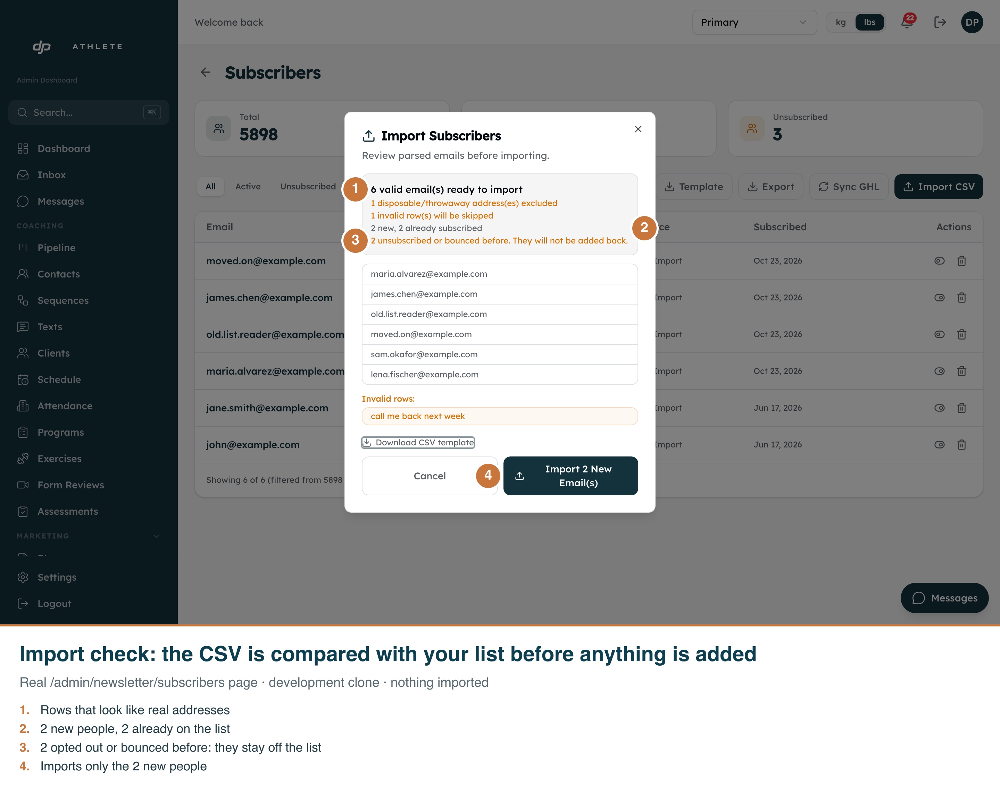
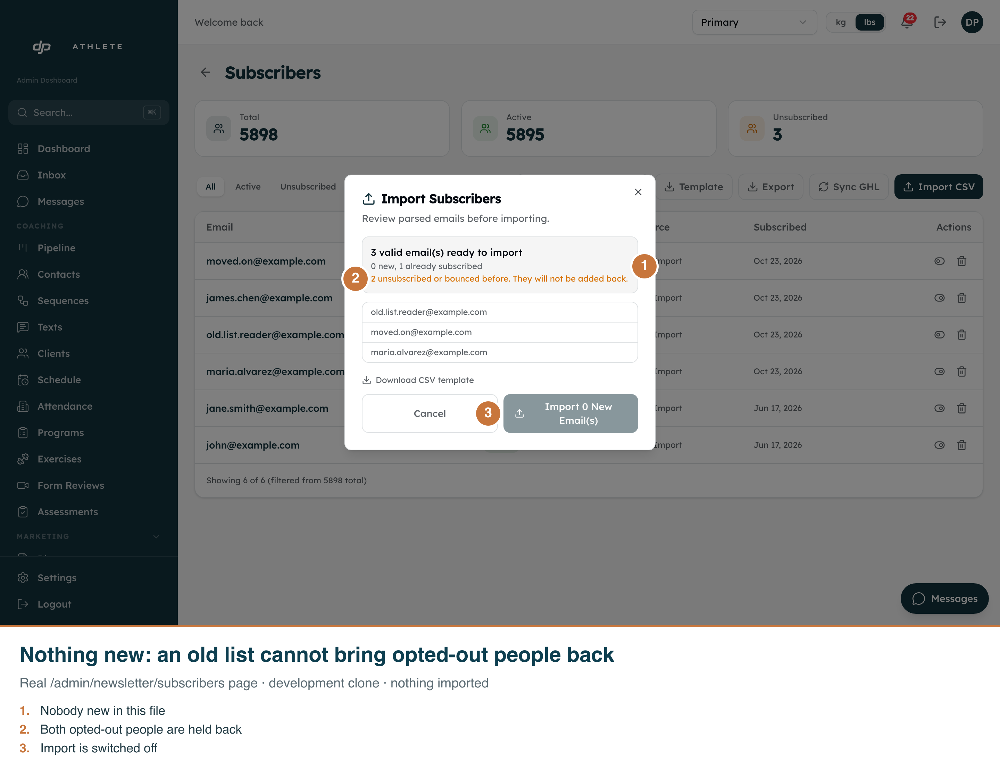

When a CSV is picked, the dialog checks every address against the subscriber list before anything is imported. New people are added. People already on the list are left alone. People who unsubscribed, bounced or marked a newsletter as spam are never added back. The same rule applies to "Sync GHL". Captured on the real page against the development clone with example.com addresses; nothing was imported.

